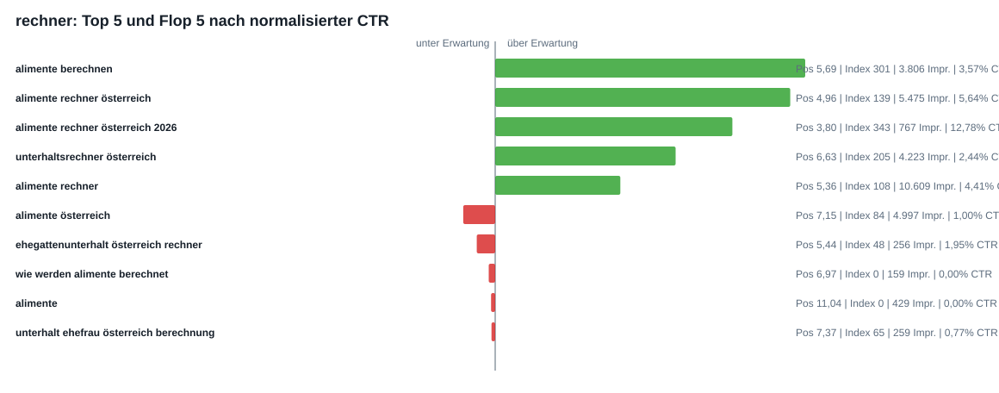
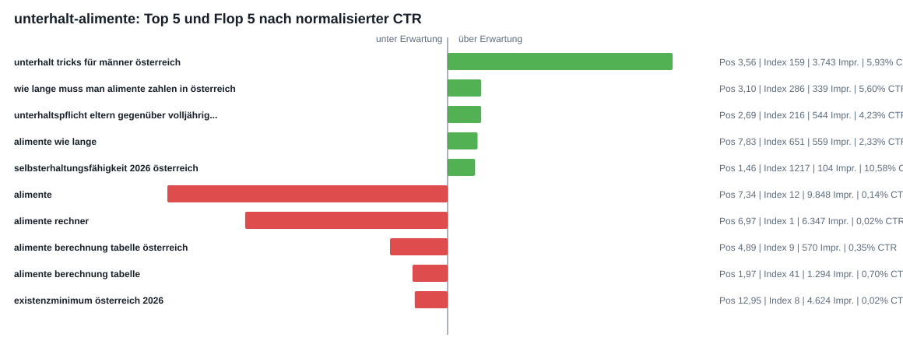
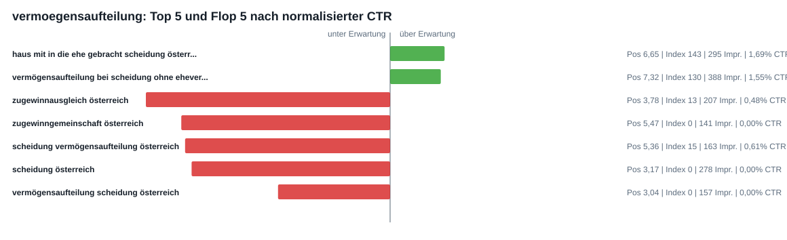
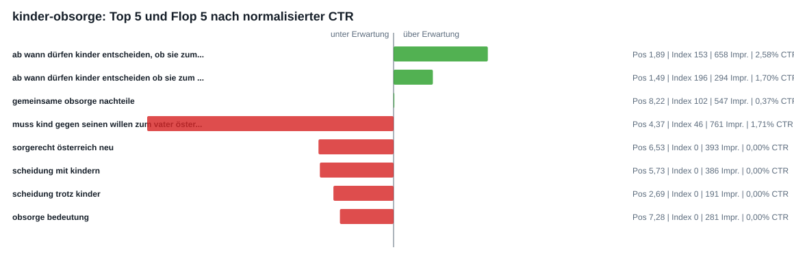
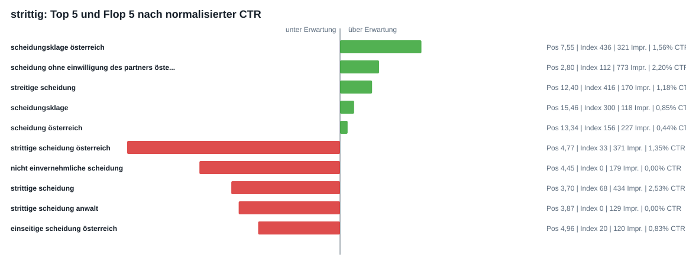
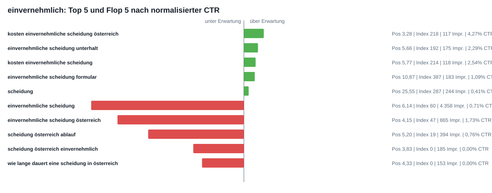

CTR- und Title-Tag-Analyse
Die CTR wurde gegen eine erwartete CTR je Ranking-Positions-Bucket normalisiert. Ein CTR-Index von 100 bedeutet erwartbar; unter 100 deutet auf Snippet-/Title-Potenzial hin.
Title-Tag-Priorisierung
| Seite | Title anpassen? | Aktueller Title | CTR-Index | Fehlende Klicks | Fehlende Begriffe aus Flops | Vorgeschlagener Title |
|---|---|---|---|---|---|---|
| rechner | Nein | Alimente Rechner Österreich 2026 | Unterhalt berechnen | 153 | 0 | ehegattenunterhalt, berechnung, werden, berechnet, ehefrau, wieviel | Alimente Rechner Österreich 2026 | Unterhalt berechnen |
| unterhalt-alimente | Ja, höchste Priorität | Unterhalt & Alimente 2026: Beispiele & Infos für Österreich | 67 | 414 | rechner, berechnung, tabelle, man, zahlen, muss | Alimente & Unterhalt 2026 | Tabelle, Rechner, Beispiele |
| vermoegensaufteilung | Ja, mittlere Priorität | Wer bekommt was (2026) | Scheidung Vermögensaufteilung (AT) | 69 | 43 | zugewinnausgleich, zugewinngemeinschaft, ausgleichszahlung, haus, auszahlen, berechnung | Vermögensaufteilung Scheidung 2026 | Haus & Ehevertrag |
| kinder-obsorge | Ja | Scheidung mit Kindern | Obsorge-Infos 2026 (mit Beispielen) | 48 | 88 | kind, vater, muss, gegen, seinen, willen | Scheidung mit Kindern 2026 | Obsorge & Sorgerecht |
| strittig | Ja, mittlere Priorität | Strittige Scheidung 2026 | Ablauf, Gründe & häufige Fehler | 58 | 50 | nicht, einvernehmliche, anwalt, einseitige, erfahrungen, schuldhafte | Strittige Scheidung Österreich 2026 | Ablauf, Gründe, Fehler |
| einvernehmlich | Ja | Einvernehmliche Scheidung Österreich 2026 | So funktionierts | 48 | 135 | einvernehmlich, ablauf, kosten, unterhalt, lange, dauert | Einvernehmliche Scheidung 2026 | Ablauf, Kosten, Formular |
rechner
Aktueller Title: Alimente Rechner Österreich 2026 | Unterhalt berechnen
Empfehlung: Nein. Vorschlag: Alimente Rechner Österreich 2026 | Unterhalt berechnen

unterhalt-alimente
Aktueller Title: Unterhalt & Alimente 2026: Beispiele & Infos für Österreich
Empfehlung: Ja, höchste Priorität. Vorschlag: Alimente & Unterhalt 2026 | Tabelle, Rechner, Beispiele

vermoegensaufteilung
Aktueller Title: Wer bekommt was (2026) | Scheidung Vermögensaufteilung (AT)
Empfehlung: Ja, mittlere Priorität. Vorschlag: Vermögensaufteilung Scheidung 2026 | Haus & Ehevertrag

kinder-obsorge
Aktueller Title: Scheidung mit Kindern | Obsorge-Infos 2026 (mit Beispielen)
Empfehlung: Ja. Vorschlag: Scheidung mit Kindern 2026 | Obsorge & Sorgerecht

strittig
Aktueller Title: Strittige Scheidung 2026 | Ablauf, Gründe & häufige Fehler
Empfehlung: Ja, mittlere Priorität. Vorschlag: Strittige Scheidung Österreich 2026 | Ablauf, Gründe, Fehler

einvernehmlich
Aktueller Title: Einvernehmliche Scheidung Österreich 2026 | So funktionierts
Empfehlung: Ja. Vorschlag: Einvernehmliche Scheidung 2026 | Ablauf, Kosten, Formular
